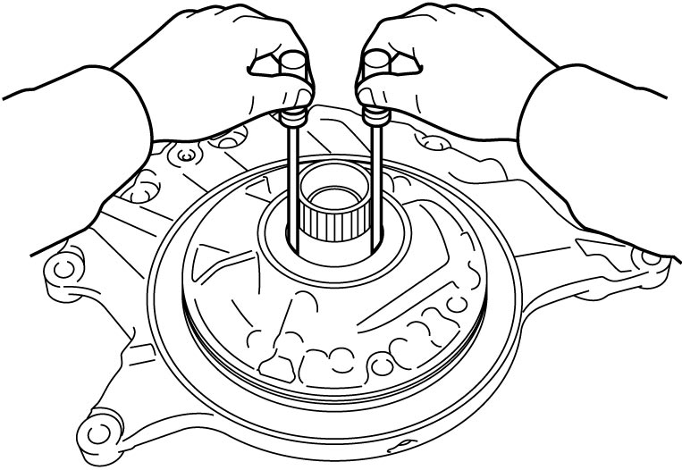
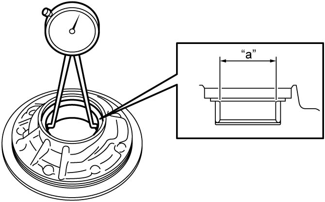

5A
| Oil Pump Assembly Inspection |
1)Check oil pump for smooth rotation by using 2 flat-bladed screwdrivers or the like.
If any abnormality is found, replace oil pump assembly.

If any abnormality is found, replace oil pump assembly.

 "Expand image")
2)Remove oil seal. 
3)Measure bore of oil pump bushing.
If check result is not as specified, replace oil pump assembly.
If check result is not as specified, replace oil pump assembly.
Oil pump bushing bore “a”
Standard: 38.115 – 38.138 mm (1.5006 – 1.5014 in.)

 "Expand image")